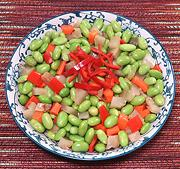

|
Edamame Salad, SichuanChina - Sichuan - Xiang You Qing Dou | ||||
| Makes: Effort: Sched: DoAhead: |
13 ounces ** 20 min Yes |
This is a very simple recipe, but quite popular in southern China, where some versions are even simpler. 13 ounces is 4 or 5 salad servings, but for buffet, make a lot more. | |||
|
8 2-1/2 1 1 1/2 1/4 |
oz oz oz T t |
Edamame, Shelled (1) Sichuan Vegetable (2) Carrot Red Chili (3) Sesame Oil, dark Salt |
Make - (45 min - 15 min work)
|